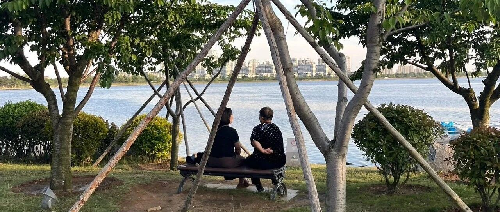

躺平！年轻人的时代红利
点击关注 秋秋在分享
一起实现财务自由退休
大家好，我是秋秋呀。
每个人都有自己的红利，每代人也有每代人的红利。
老一辈会说，你们现在年轻人多幸福啊，吃饭有外卖，出门有地铁有公交，一部手机在家里不出门也能知道全世界发生的事，移动支付不用担心有小偷。
真要生娃有无痛，带娃有老人有保姆，想要啥东西一个快递、天南海北就给你送来了。
年轻人不知足。
不对，他们把「时代便利」和「时代红利」混淆了。
我们这一代人有很多生活便利，却很少有时代红利。
时代红利是什么？
是普通人逆天改命的机会。
通俗点说，【时代红利】就是到处是「蓝海」，只要你肯干，就有翻身跨越阶级的机会。
而现在，除了读书、甚至读书，都很难让你再跨越阶级。
我们有的只是【时代便利】，生活更方便，每个人都公平享有，却不可能让你赚大钱、咸鱼翻身。

以我为例，小学就普及义务教育了，可是一路读书下来，没有毕业就包分配。
没有接班制度。
没有踏踏实实工作就能分到房子。
没有经济转型，创业的机遇。
也没有赶上买房红利，赶上了房贷福利。
没法50岁就退休领退休金，只赶上996福报和不断延长的退休年龄。
可以说，普通人的上升通道几乎关闭。真要认认真真工作，反而欠款现在最多。
非要说时代红利，我算赶上了短视频风口。
然而认真做了几年知识类博主发现，还不如摇花手。
那些比我读书更好的朋友，甚至连短视频风口都没赶上，因为高中时期家长不让玩手机、看闲书。
按部就班的年轻人，学历红利吃不着、房子红利也没有、接班福利更别想。
好在，命运不给我们一些东西的时候，我们还有保底的自由。
就是上面说的，我们这个年代「时代便利」可太多了。
你用得好，就是我们的时代红利。

——
比起原始人，我们现在有发达的科技。
像北方几百块钱月租的房间，就能做到冬天有暖气、夏天有空调，四季舒适。
我们生活的地方也没有战乱、没有饥荒，不用为基础的生存问题焦虑。
甚至在古代达官贵人都过不上的生活，我们2000多一个月就能过上。
前一阵子《长安的荔枝》很火，要举众人之力，冒着丢脑袋的危险，才能带几株荔枝回宫。
现在，超市10块钱一斤。我家冰箱还冻着，随时想吃都能吃。
这个时代最好的红利，就是躺平过舒服的生活。
我说的躺平，不是什么都不做，而是工作只占很小一部分，你有自己的个人时间和家庭生活。
是你太累的时候，能选择不做，这个时代给你很多兜底。
三年前，我写过回老家小县城，早饭2块钱就能吃饱：
也是那时候，我意识到生活不需要活得那么累。
一块钱一碗白粥，小包子7毛钱一个，再吃一点免费的咸菜，甚至1.7元就可以吃的好。
上午看看书，午餐去吃点好的。
现在外卖大战塔斯汀汉堡才3.9元一个，蜜雪冰城2元的柠檬水百喝不腻。
晚上去跳跳免费的广场舞，打打游戏，我不相信一个月2000块钱会活的不好。
我们现在活着的成本真的很低。
如果你勤快点，还可以去商场蹭免费的空调。像我现在旅居威海附近，房租还有几百块一个月的。
你不想奋斗，一年一两万就能活的很好，攒个十万能躺平十年。
你想睡觉就呼呼大睡，不想做饭就点外卖，你有大把时间看书学习玩游戏追剧锻炼身体、做喜欢的事，也没有人际关系和琐事烦恼。
只要你不想上进，时代红利本身就能让你活的很舒服。
不想打拼完全没关系，养好身体就行了。

——
说到这，肯定会有人质疑：
一、你不求进取
只是生活便利你就满足了，人应该追求更好的生活！
可算了吧。
幸福不是和别人去比较，而是和自己的感受去比较。
我之前辛苦打工，也舍不得开全平台视频会员，一年总计1000多，我还有必要计较谁又买了好车好房吗。
能实实在在吃到嘴里、用在身上的，才是幸福。
我辛苦打工没时间花钱，算什么追求更好的生活。
我去供养20年房贷的“好房子”，每天却只能闭眼待个几小时。
花钱买了全套智能家居，却发现根本没时间做饭、还是外卖方便。
与其努力进取，幻想去追求拥有的多，不如追求谁能利用的多。
5000多的手机，我能每天打游戏，值！
50万的房子，我每天都躺里面，值！
几万的相机，我一年没机会拍几次，那再好的东西不用都是不值。
我的追求就是物尽其用！
吃5块钱的路边摊很快乐，快捷酒店我很舒适的，我的快乐是容易满足的。
我还追求啥呢？
二、生娃根本躺不平
是的！
一个人可以旅居，可以吃2块钱的早餐，可以乐在其中。
可是生娃没有学区房、再吃点便宜点的东西，那就是不负责任。
有这种反思的，才是最该生娃的。
反而说「养孩子有什么难的」，不应该生。
这批最有责任感的我们，我想说没必要再折磨自己到极致了，你的下限已经很高了。
我们是第一次当父母，却不是第一次当孩子。
小时候最讨厌听爸妈说：当初要不是为了你……
孩子也不喜欢父母来卷自己。
娃是不是那块料咱先不说，前面也说过也逆天改命的「时代红利」越来越少了，甚至读书也不算是。
有钱不如直接留给孩子，或者干脆少生病活久一点不给孩子添负担。
三、我不敢躺平
躺平了生病怎么办？
前面说了，是利用时代便捷的红利，过轻松点的生活，不是说你当乞丐去吧，吃不上饭看不起病。
大多数人还没意识到这一点，有钱人的资产不是钱，而是穷人、是劳动力。
最不希望你躺平的，反而是资本家。
普通人一旦开始躺平，富人就要慌了，因为你和他们的差别不大了。
奢侈品广告为什么要投放的人尽皆知，普通人也买不起啊！因为人人不认识保时捷，那和小米也差不多(小米也很好)。
如果你的人生大事，都是靠请假完成的，那真的要反思一下值不值。
毕竟红利要趁早享受。
等大家都意识到了，红利也就没有了。
心安理得的过舒适的生活，就是在吃时代红利。